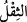
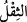
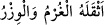

sonra dirilmek ve muâheze olunmak yoktur, faraza vuku bulsa bile günahlarınızı biz
yükleniriz,” demektir.
“ (hatâlar)” kelimesi, “nin çoğuludur. O da “ kelimesinden
türetilmiştir. Yoldan ve istikametten sapmak, mânâsına gelir.
Allah Teâlâ şu âyetle onların bu iddiâlarını reddetmiştir:
“Halbuki onların hiçbir günahını yüklenecek değillerdir.”
Bu cümle hâl cümlesidir. Takdiri şöyledir: Halbuki onlar taşımayı tekeffül ettikleri
hatâlardan hiç birini taşıyacak halde değildirler.
Cümledeki birinci “ ” tebyin için; ikinci “
” tebyin için; ikinci “ ” ise istiğrak içindir ve ziyadedir.
” ise istiğrak içindir ve ziyadedir.
“Gerçekte onlar,” vaad ettiklerini yerine getirmeye kâdir olduklarını söyledikleri
taşıma işinde “kesinlikle yalan söylemektedirler.”
13. (Fakat gerçek şu ki) elbette kendi yüklerini (veballerini), kendi yükleriyle
birlikte nice yükleri taşıyacaklar ve uydurup durdukları şeylerden kıyamet günü
mutlaka sorguya çekileceklerdir.
“(Fakat gerçek şu ki) elbette” yâni bu sözleri söyleyenler “kendi yüklerini
(veballerini),” yâni işledikleri günahları “taşıyacaklar...”
Bu, kıyamet günündedir.
“; “ kelimesinin çoğuludur. “ ve “ veznindedir. “ ve “
ve “ veznindedir. “ ve “
birbirinin mukâbili iki kelimedir. Ölçülen ve tartılan, böylece ağırlığı olan herşeye “(ağırlık, yük)” denir. Denilir ki: “ (O ağır bir yüktür)”. Bu kelime asıl olarak
cisimlerde kullanılırken sonradan mânâlar için de kullanılır olmuştur. Meselâ; “ (Borç ve günah ona ağır geldi, güç oldu)” denilir.
Râğıb Isfahânî der ki: “yükleri” ifâdesinden maksad, onlara ağır gelen ve sevabtan
alıkoyan günahlarıdır.
“Kendi yükleriyle birlikte nice yükleri taşıyacaklar”
“Nice yükler” ve günahlardan maksad, onların saptırma günahlarıdır. Dolayısıyla hem
kendi sapıklıkları sebebiyle ve hem de başkalarını saptırdıkları için azâb göreceklerdir.
Saptırdıkları insanların günahlarından da bir eksilme ve bir noksanlaşma olmayacaktır.
Böylece saptıranların günahları sapanların günahlarından bir kat daha fazla olacaktır.